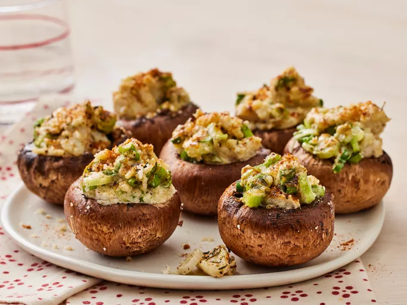

Home
Crab-stuffed Mushrooms

Description
These tasty crab-stuffed mushrooms are seasoned with thyme, oregano, and
savory. Choose good-sized mushrooms for this appetizer, about 2 inches across.
Just wipe them clean with a damp towel.
Ingredients
- 7 ounces canned crabmeat, rinsed
- 5 green onions, thinly sliced
- 1/4 teaspoon dried thyme or to taste
- 1/4 teaspoon dried oregano or to taste
- 1/4 teaspoon ground savory or to taste
- ground black pepper to taste
- 1/4 cup grated Parmesan cheese
- 1/3 cup mayonnaise
- 1 pound fresh mushrooms
- 3 tablespoons grated Parmesan cheese
- 1/4 teaspoon paprika